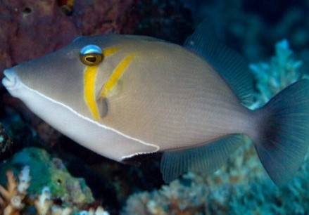

Ikan dengan nama latin Amphiprion percula ini memiliki warna dominan oranye dan juga termasuk jenis paling populer.

Ikan Trigger
Ikan buas yang lazim dipelihara dalam aquarium. Ikan ini bisa disebut sebagai musuh para nelayan karena memiliki gigi-gigi yang tajam.
Ikan Betok Hias
Ikan ini ditemukan secara global di perairan tropis, subtropis, dan beriklim sedang.
Ikan Neon Tetra
Ikan hias air laut yang dikenal dengan kekhasan warna keemasan bergaris tipis berwarna biru menyerupai lampu neon di bagian tubuh belakang hingga ke bagian dekat mata.
Ikan Blue Tang
Ikan ini merupakan satu-satunya spesies ikan dalam genus Paracanthurus.memiliki corak berwarna biru dengan ekor kuning dan warna hitam pada bagian atas.
Ikan Lion
Ikan hias air laut ini cukup unik karena memiliki ornamen-ornamen pada tubuhnya yang berbentuk seperti duri.
Ikan Badut
Ikan badut (clownfish, ikan nemo) adalah ikan pemula yang fantastis untuk pemelihara akuarium baru karena mereka terkenal mudah diberi makan.
Di habitat aslinya, ikan omnivora ini akan memakan apa saja termasuk krustasea kecil, copepoda, ganggang, telur ikan, dan larva.
Meski ikan badut bisa memakan sebagian besar makanan ikan air laut, mereka juga menyukai pakan serpih.
Beberapa pilihan makanan yang direkomendasikan adalah pelet Ultra Marine Soft Clownfish
Triggerfish adalah sekitar 40 spesies ikan berwarna cerah dari keluarga Balistidae . Seringkali ditandai dengan garis dan titik, mereka menghuni lautan tropis dan subtropis di seluruh dunia, dengan kekayaan spesies terbesar di Indo-Pasifik.
Sebagian besar ditemukan di habitat pesisir yang relatif dangkal, terutama di terumbu karang,namun ada pula yang bersifat pelagis , seperti triggerfish samudera(Canthidermis maculata).Meskipun beberapa spesies dari keluarga ini populer dalam perdagangan akuarium laut,mereka sering kali terkenal pemarah.
Makanan utama ikan Trigger adalah hewan invertebrata seperti ubur-ubur, hydra, cumi-cumi, dan cacing.
Banyak spesies hidup di bebatuan tropis atau terumbu karang, dan banyak di antaranya dipelihara sebagai hewan peliharaan akuarium laut. Makanan mereka termasuk krustasea kecil, plankton, dan alga.
Ikan betok domino D. albisella menghabiskan sebagian besar (lebih dari 85%) waktunya di siang hari untuk mencari makan .
Individu yang lebih besar biasanya mencari makan di tempat yang lebih tinggi di kolom air dibandingkan individu yang lebih kecil.
Ikan Neon Tetra (Paracheirodon innesi) merupakan salah satu ikan hias air tawar yang memiliki peluang pasar yang bagus.
Ikan ini memiliki ciri khas warna biru yang menyala sepanjang tubuhnya mulai dari ujung mulut hingga pangkal ekor.
Ikan neon tetra sangat mudah untuk dipelihara di akuarium dengan air yang memiliki pH sekitar 5,0 - 7,0 dengan suhu menyerupai suhu di alamnya yaitu antara 20 - 26 derajat celcius.
Neon tetra bersifat omnivora pemakan segalanya baik dari bahan hewani maupun nabati diantaranya seperti makanan berupa flake food, udang-udang kecil, daphnia, bloodworms atau cacing darah beku dan kering.
Blue Tang atau di indonesia biasa di panggil dengan nama Lettersix atau biasa dipanggil dengan nama populer Dori adalah ikan yang indah dan merupakan tambahan yang bagus untuk akuarium air laut anda.
Spesies ini harus disimpan dalam akuarium, cukup besar didirikan dengan banyak batu hidup dan banyak air terbuka untuk berenang.
Spesies ini memiliki tubuh dengan warna biru cerah serta terdapat pola hitam seperti angka enam, ekor kuning dengan sirip hitam. Sirip dada biru serta ujungnya hitam yang dilingkari dengan kuning. Diakuarium, anda bisa memberi mereka sayuran laut seperti rumput laut, nori atau spirulina.
Lion Fish atau disebut juga ikan lepu ayam, Corak tubuhnya bergaris merah, marun, coklat, oranye, hitam dan putih.
Bentuk siripnya berduri seperti kipas atau rumbai-rumbai. Panjang tubuhnya sekitar 10-40 cm.
Ikan ini juga merupakan Ikan yang berumur panjang. Usia Lion Fish bisa mencapai 15-16 tahun.
Walaupun cantik, jangan sampai terpukau oleh kecantikannya sehingga berani menyentuh ikan ini. sirip dan durinya yang indah sangat beracun bila menusuk kulit.
Makanan utamanya adalah ikan- ikan kecil, moluska (hewan bertubuh lunak dengan/tanpa cangkang), dan invertebrata.